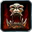

Warrior – Arms leveling
Warrior – Arms leveling
Leveling Split 31 / 20 / 0 (Arms / Fury / Protection)
Rend, Overpower and Deep Wounds early, Sweeping Strikes at 30, Mortal Strike at 40, then Fury for crit and rage.
Talents in this build
Hover or tap a talent to see what it does at that rank.
Arms · 31
 Deflection 3/5
Deflection 3/5 Improved Rend 3/3
Improved Rend 3/3 Improved Tactical Mastery 3/3
Improved Tactical Mastery 3/3 Improved Overpower 2/2
Improved Overpower 2/2 Anger Management 1/1
Anger Management 1/1 Deep Wounds 3/3
Deep Wounds 3/3 Spearing Strike 1/1
Spearing Strike 1/1 Two-Handed Weapon Specialization 3/3
Two-Handed Weapon Specialization 3/3 Impale 1/2
Impale 1/2 Bloodthrill 2/2
Bloodthrill 2/2 Sweeping Strikes 1/1
Sweeping Strikes 1/1 Weaponmaster 5/5
Weaponmaster 5/5 Improved Slam 2/2
Improved Slam 2/2 Mortal Strike 1/1
Mortal Strike 1/1
Fury · 20
 Cruelty 5/5
Cruelty 5/5 Unbridled Wrath 5/5
Unbridled Wrath 5/5
Piercing Howl 1/1 Blood Craze 3/3
Blood Craze 3/3 Enrage 5/5
Enrage 5/5 Reckless Swings 1/1
Reckless Swings 1/1
Leveling order
level 10 → 60
One talent point per level from 10 to 60. Press play to watch the build fill in, or switch to Text for the list.
| Level | Talent | Tree |
|---|---|---|
| 10 | Arms | |
| 11 | Arms | |
| 12 | Arms | |
| 13 | Arms | |
| 14 | Arms | |
| 15 | Arms | |
| 16 | Arms | |
| 17 | Arms | |
| 18 | Arms | |
| 19 | Arms | |
| 20 | Arms | |
| 21 | Arms | |
| 22 | Arms | |
| 23 | Arms | |
| 24 | Arms | |
| 25 | Arms | |
| 26 | Arms | |
| 27 | Arms | |
| 28 | Arms | |
| 29 | Arms | |
| 30 | Arms | |
| 31 | Arms | |
| 32 | Arms | |
| 33 | Arms | |
| 34 | Arms | |
| 35 | Arms | |
| 36 | Arms | |
| 37 | Arms | |
| 38 | Arms | |
| 39 | Arms | |
| 40 | Arms | |
| 41 | Fury | |
| 42 | Fury | |
| 43 | Fury | |
| 44 | Fury | |
| 45 | Fury | |
| 46 | Fury | |
| 47 | Fury | |
| 48 | Fury | |
| 49 | Fury | |
| 50 | Fury | |
| 51 | Fury | |
| 52 | Fury | |
| 53 | Fury | |
| 54 | Piercing Howl 1/1 | Fury |
| 55 | Fury | |
| 56 | Fury | |
| 57 | Fury | |
| 58 | Fury | |
| 59 | Fury | |
| 60 | Fury |